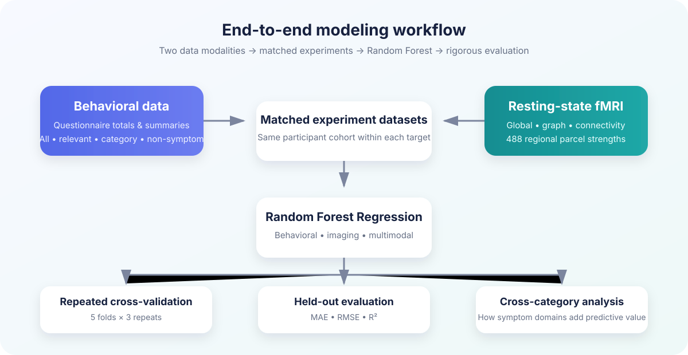

Depression
Quick Inventory of Depressive Symptomatology total score.
Random Forest Regression · Behavioral + Neuroimaging Data
We compared behavioral questionnaires, resting-state fMRI features, and multimodal data to predict continuous depression, anxiety, stress, and anhedonia severity using the Transdiagnostic Connectome Project.
Which data source provides the strongest out-of-sample prediction of mental-health symptom severity?
Project overview
The project focuses on symptom severity rather than diagnosis, allowing the models to capture variation within and across traditional diagnostic groups.
Quick Inventory of Depressive Symptomatology total score.
Current state-anxiety severity from the State-Trait Anxiety Inventory.
Self-reported perceived stress severity.
Reduced capacity to experience pleasure or enjoyment.
Questionnaire totals and summary features, tested as all, relevant, target-category, and non-symptom scopes.
Resting-state fMRI summaries, graph organization, connectivity summaries, and 488 parcel-strength features.
Behavioral feature scopes combined with imaging features to test whether fMRI adds predictive value.
Dataset
An open, richly phenotyped dataset designed to study brain–behavior relationships across psychiatric and general-population participants.
View dataset on OpenNeuro →Method
Every target uses a matched participant cohort across modalities. Feature reduction for regional imaging data is fitted inside each training fold to reduce leakage risk.

Key results
The strongest behavioral models outperformed imaging-only models for all four outcomes. Adding the current fMRI representation generally did not improve on the strongest behavioral-only model.
Questionnaire features produced the strongest repeated-CV performance.
Imaging-only R² values were near or below zero.
More features did not translate into better prediction.
SHAPS showed the weakest and least stable generalization.
This does not prove leakage is impossible, but it supports that no single retained behavioral predictor was nearly identical to its outcome.
Cross-category analysis
Each outcome begins with its own symptom domain as a baseline. The charts show how repeated cross-validation R² changes when related domains are added.
Related symptom domains sometimes improved prediction, but the size and direction of that contribution differed substantially by outcome.
Benefits & challenges
This project is for research and education. Its predictions are not medical diagnoses and should not be used to make clinical decisions about an individual.
Project artifacts
Pipeline scripts, outputs, validation reports, and documentation.
Open repository → App Streamlit dashboardInteractive interface for target/model comparisons, metrics, and key findings.
Open dashboard → Presentation Final presentationThe complete project story, results, impact, and next steps.
View PDF → Presentation Project proposalThe original research question, modeling plan, and dataset rationale.
View PDF →Team
Dataset citation
Chopra, S. et al. (2025). The Transdiagnostic Connectome Project: an open dataset for studying brain-behavior relationships in psychiatry. Scientific Data, 12, 923.